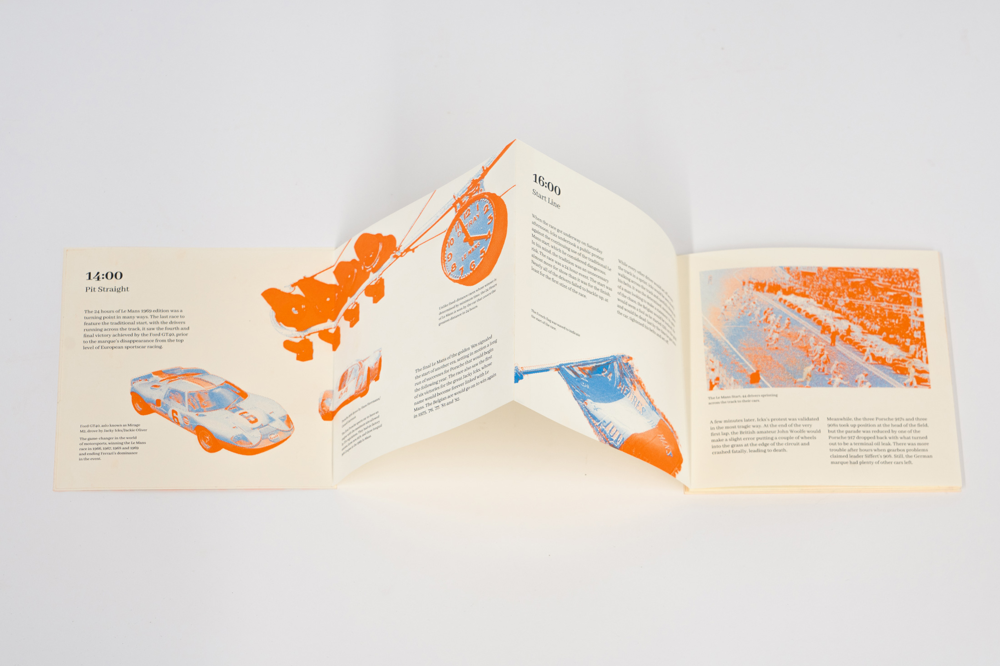
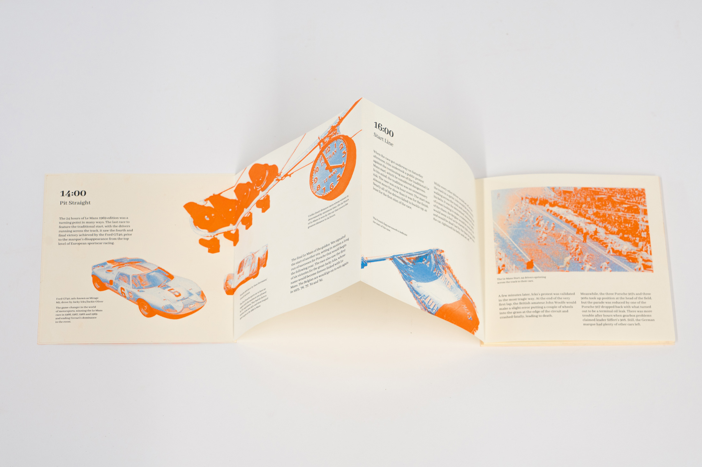
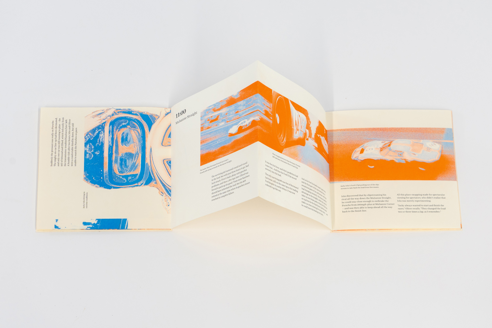
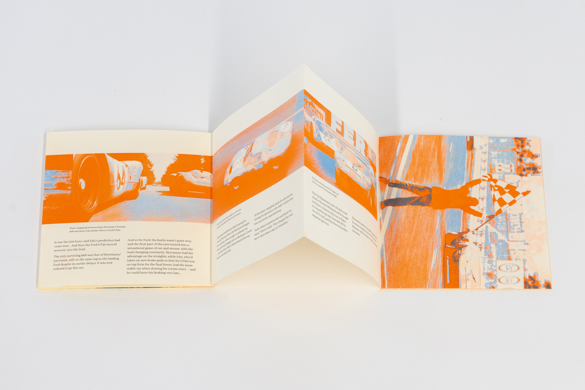
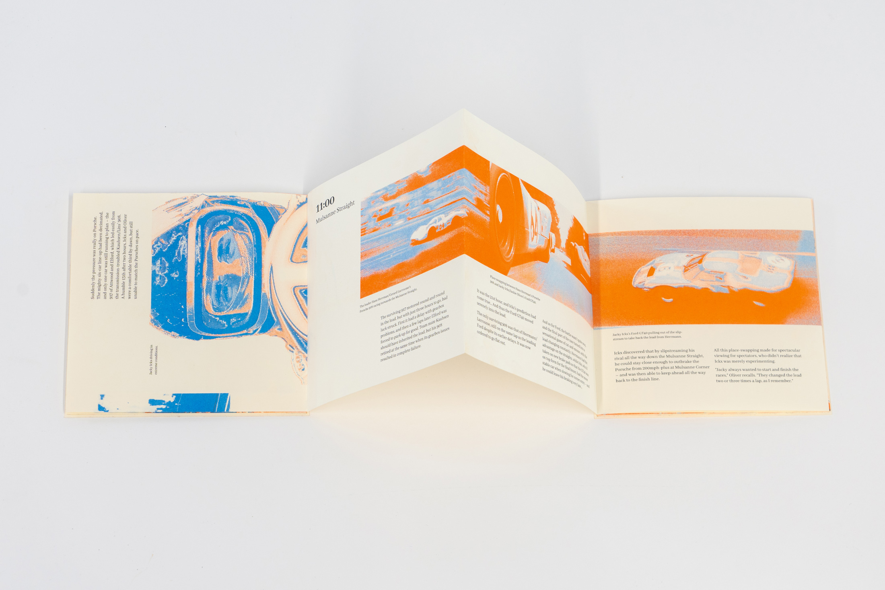
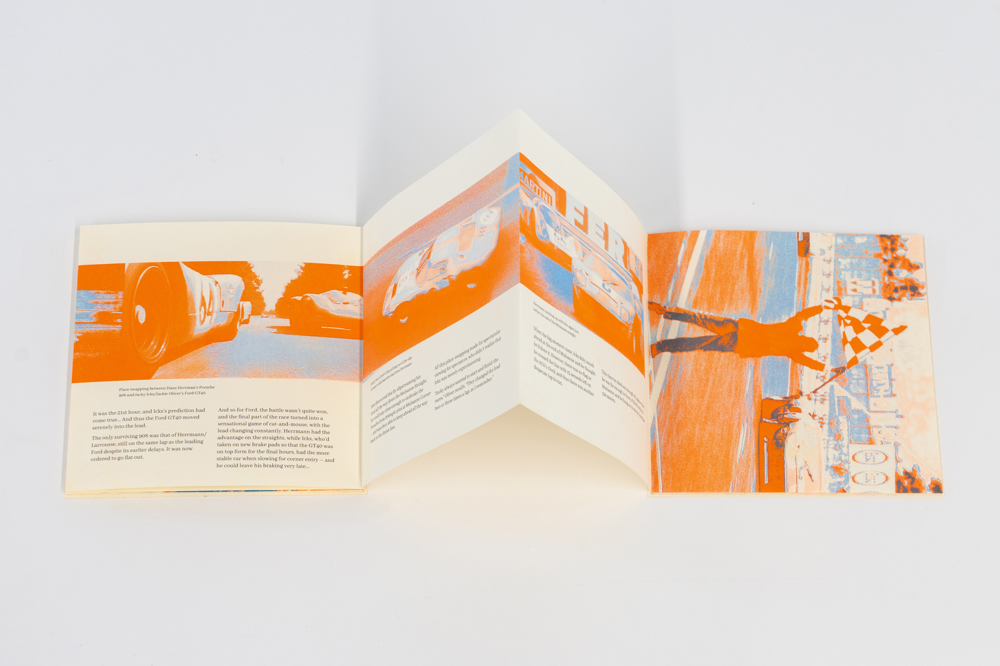
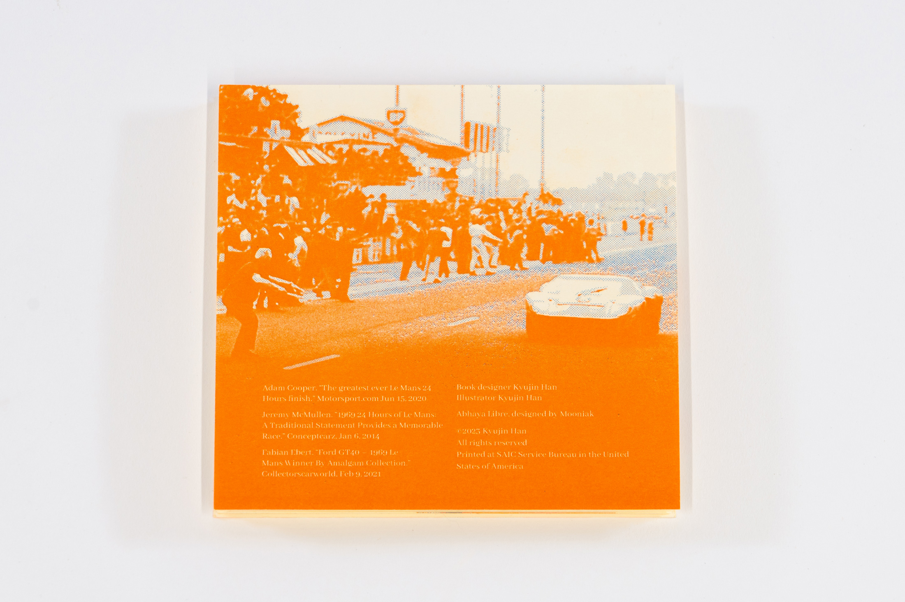
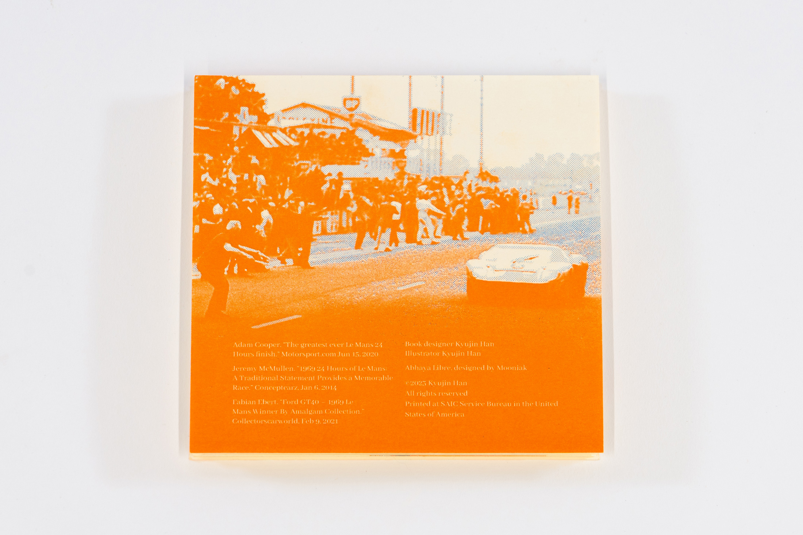

Title: 1969 Le Mans
Year: 2022
Material: 5x5 inches, Risograph
Description: Inspired by the story of a rise and fall of a kingdom from an excerpt of the “Museum, on Exactitude in Science” by Jorge Borges, the poster creates a force connection with the rise and fall movement of a bicycle kick, based on the keywords “rise and fall”. It leads to a form of infographic to explain the step of the motion, resonating the five stages of the kingdom.
Le-Mans.jpg)
Le-Mans-8.jpg) 

Le-Mans-3.jpg) 



Le-Mans-6.jpg) 
